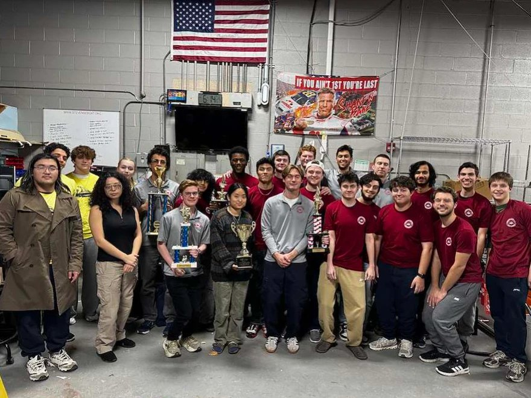

Stevens Electric Boatworks
Unmanned section member · since September 2025
Team photo

I am an undergraduate at Stevens Institute of Technology, majoring in Mathematics, and a Pinnacle Scholar. I expect to graduate in Fall 2027.
My interests span mathematics, artificial intelligence, and engineering. I am particularly interested in AI-assisted research and mathematics, as well as the study of fluid and marine systems.
I am also the founder of YH Intelligence Technology, Co., Ltd., where I develop AI tools for research.
No updates yet.
Unmanned section member · since September 2025

New York Metro local event · Team Poseidon SAR
Sea Level Detective, with Maxim Zyskin and Ningzi Chen.
Project website · Code and data · Participation certificate (PDF)
Released on Hugging Face.